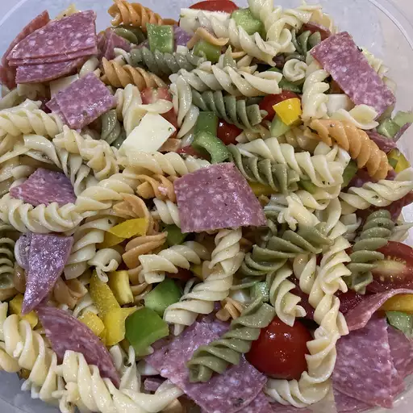

Pasta Salad

It is typically served as an appetizer, side dish or a main course
Pasta salad is often regarded as a spring or summertime meal, but it can
be served any time
Ingredients
- Pasta
- Tomatoes
- Cheese
- Garlic
Steps
- Put all your mixed greens and spinach in a large bowl
- Add in the Cheese, carrots, bell pepper, and tomatoes.
- Top with the tasty toppings